Jakarta, Indonesia · Available for opportunities
Search deserves
a human touch.
I’m Nadhifa — an SEO Specialist and Content Strategist turning search intent into useful experiences and measurable business growth.
4+ years across SEO, content, and social media
Scroll to discover
01 About
Making brands
findable and worth finding.
I help brands across sectors and sizes grow through comprehensive SEO strategy, thoughtful content, and a strong focus on both on-page and off-page optimization.
From keyword research and technical audits to copywriting and content systems, I connect audience needs with business goals — then use data to keep improving the result.
02 Selected work
Strategy that
moves numbers.
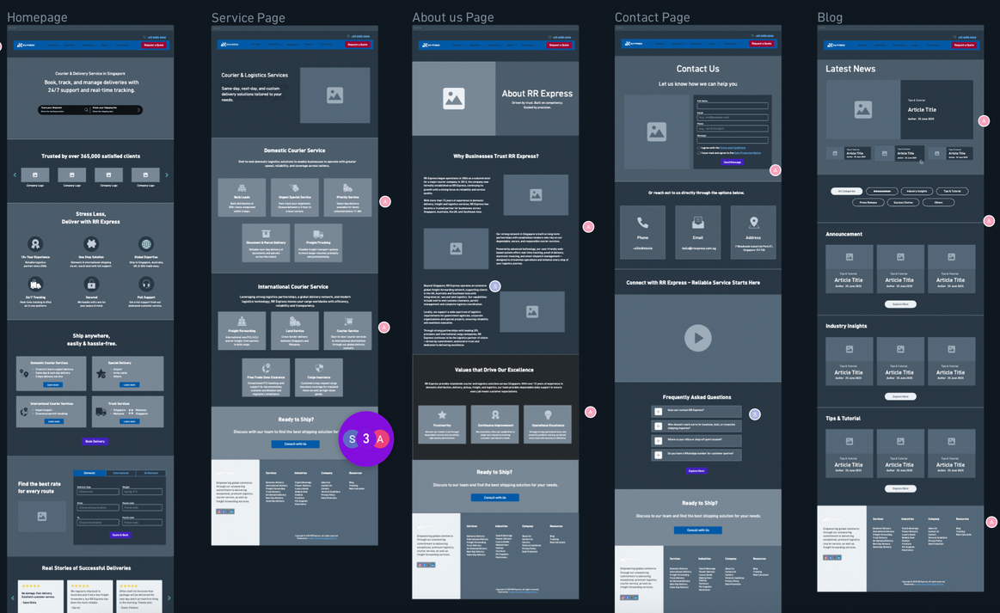
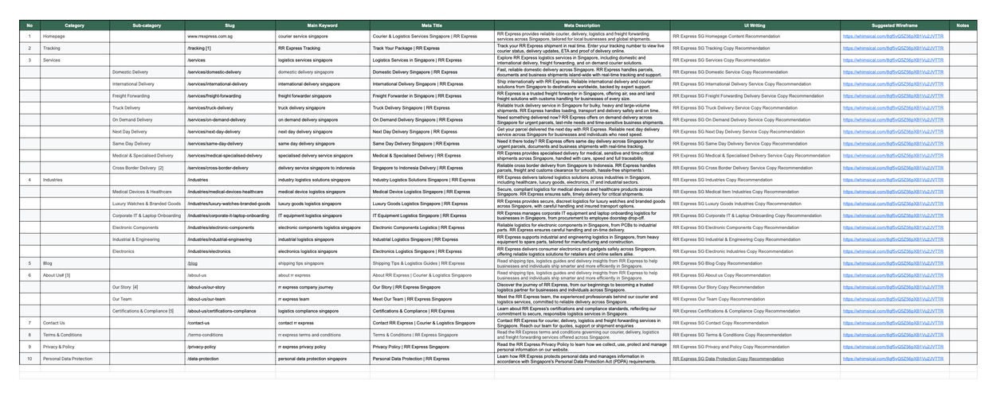
Select an image to take a closer look.
01 / SEO · Website strategy
RR Express
Owned the website strategy from zero — research, sitemap, information architecture, landing-page copy, and analytics setup for a growing Singapore logistics company.
30+ pages mapped
3 tracking tools set up
Case details+
Objective
Build search visibility and conversions from zero for a growing logistics business in Singapore.
Approach
Owned research, search-intent mapping, sitemap, information architecture, wireframes, content structure, and SEO direction for 30+ service and company pages.
Delivery
Wrote page copy, metadata, and recommendations, then worked with design and development to keep UX, SEO, and conversion goals aligned. Set up Search Console, Analytics, and Ahrefs for tracking.
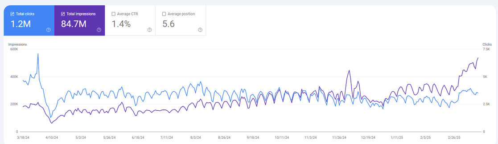
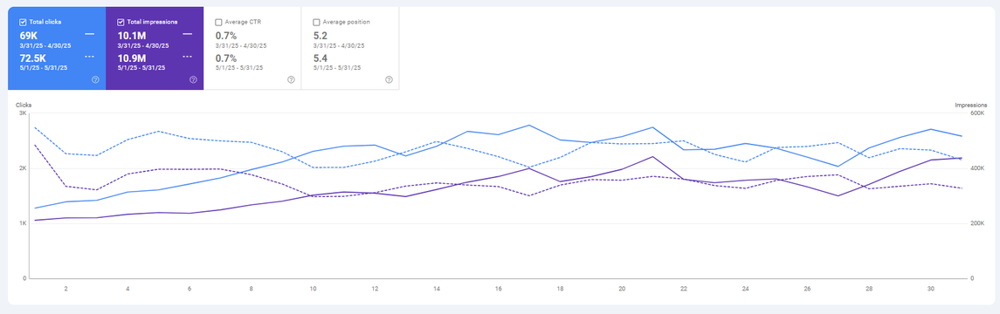
More project visuals5 +
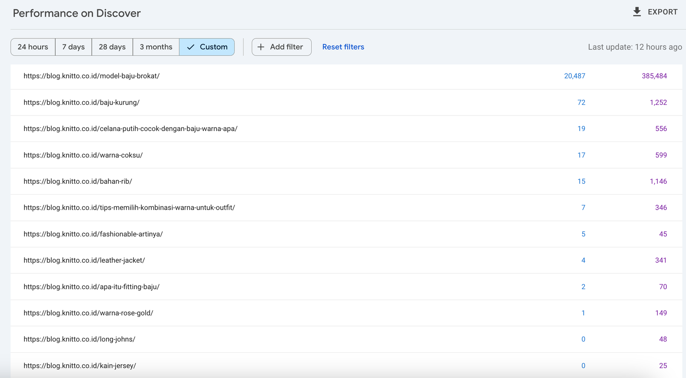
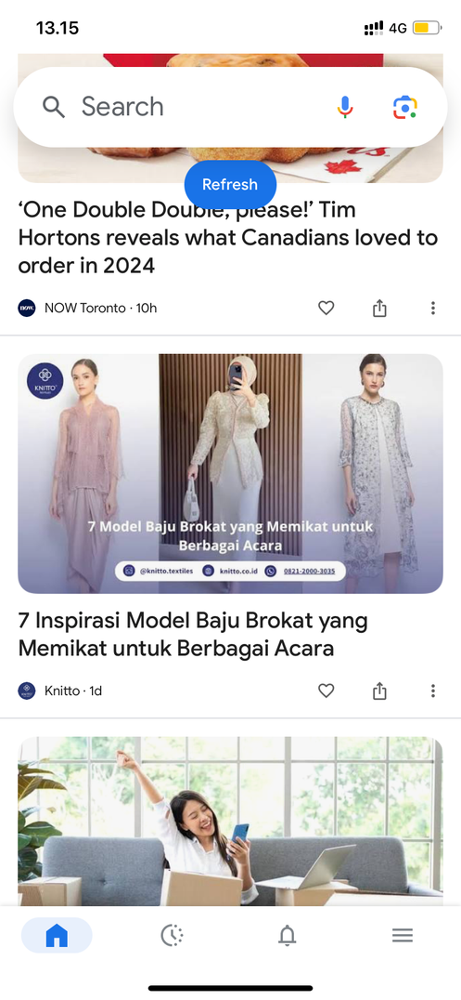
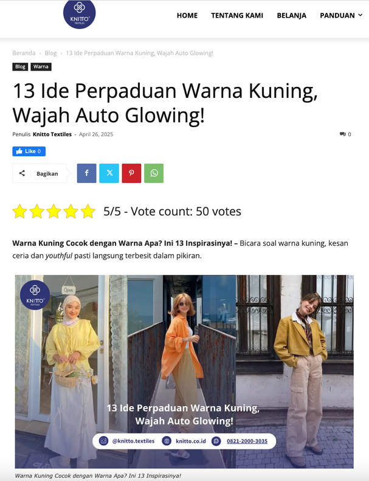
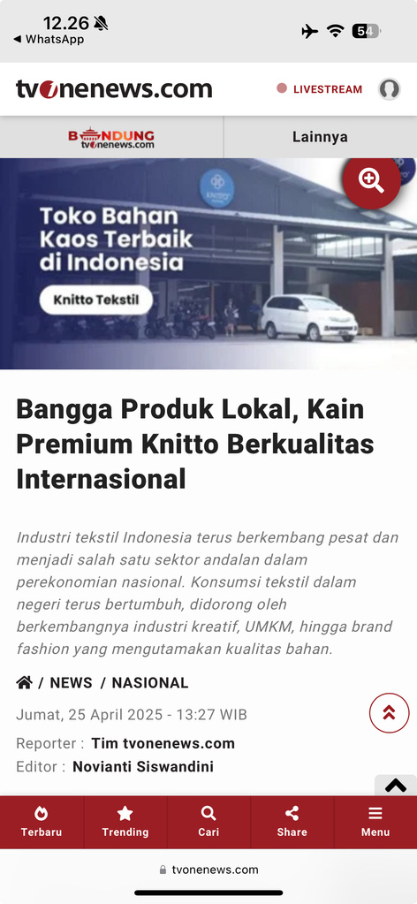
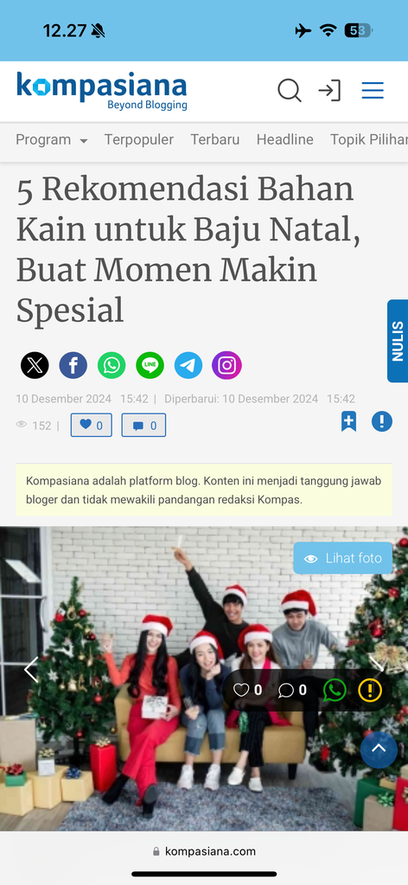
Select an image to take a closer look.
02 / SEO · Growth
Knitto
Built and executed on-page, off-page, and technical SEO programs, using content systems and performance analysis to turn search visibility into qualified leads.
1.63× traffic
1.73× impressions
3.15% ranking boost
1.5× leads
10 Discover features
100%+ KPI
Case details+
Challenge
A Google Core Update and the long Eid break pushed traffic down 14.79% and impressions down 30% in March-April 2025.
Approach
Audited dropped pages in Search Console and Semrush, refreshed content around current intent and E-E-A-T, fixed technical and mobile UX issues, strengthened internal links, and published into proven topic clusters.
Recovery
By May-June, traffic recovered by 20.3% and impressions by 26%, moving both beyond their previous levels.
More project visuals4 +
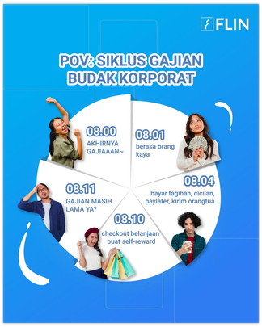
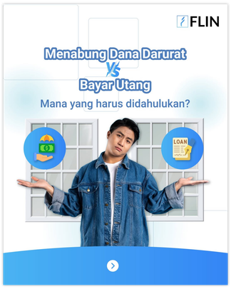
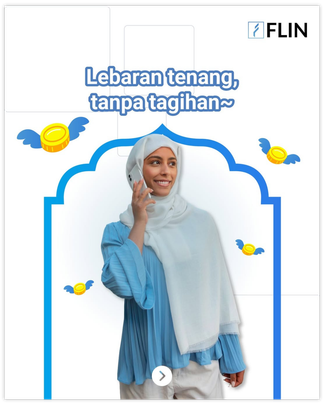
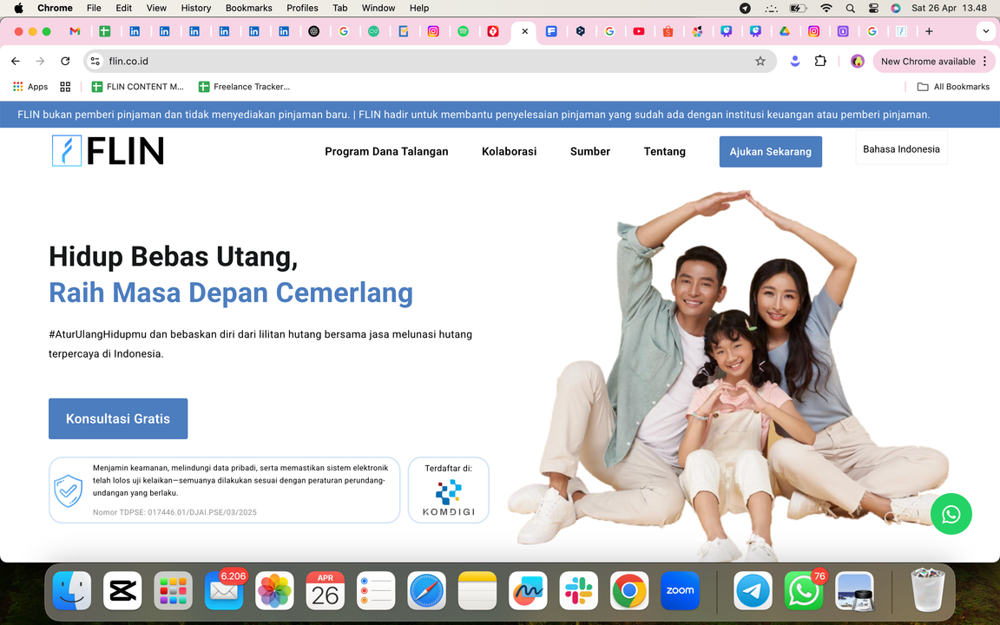
Select an image to take a closer look.
03 / SEO · Content authority
FLIN
Combined finance-focused editorial, conversion-minded homepage copy, press releases, and backlink campaigns to grow a debt-management platform in Singapore and Indonesia.
464.75% traffic
58% keyword growth
3 content pillars
Case details+
SEO
Built topical authority with finance articles, homepage keyword optimization, soft-selling CTAs, Medium articles, press releases, and paid backlink campaigns.
Social media
Extended the search strategy to Instagram through weekly entertainment, education, and promotion pillars tailored to millennials and Gen Z.
Result
Semrush reported a 464.75% traffic surge and 58% growth in keyword acquisition.
More project visuals3 +
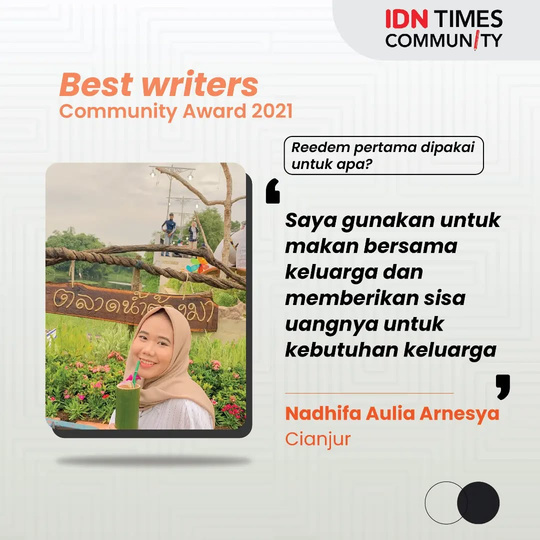
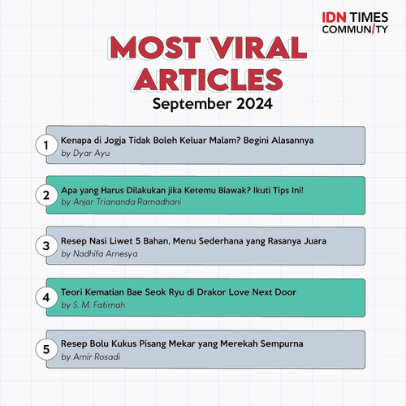
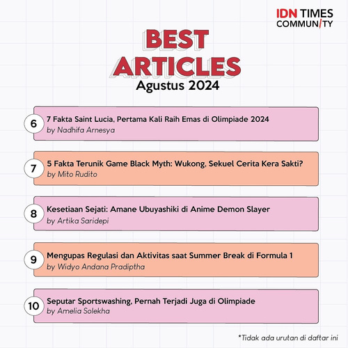
Select an image to take a closer look.
04 / SEO · Editorial
IDN Times
Used trend-led keyword research and audience-first listicles across lifestyle, travel, health, food, and technology to consistently reach page-one search results.
2M+ views
500+ top-10 keywords
10 writing awards
Case details+
Objective
Grow article views and land in the SERP top 10 across lifestyle, travel, health, food, and technology topics.
Approach
Combined keyword research with signals from Google Trends, X, TikTok, and Instagram, then used high-CTR listicle formats around emerging topics.
Result
Earned 500+ top-10 keywords, 2M+ cumulative views, and ten community writing awards.
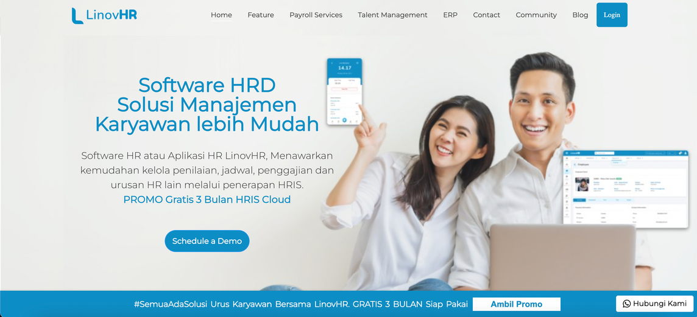
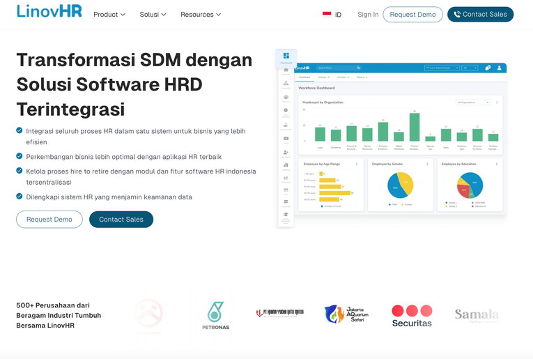
More project visuals5 +
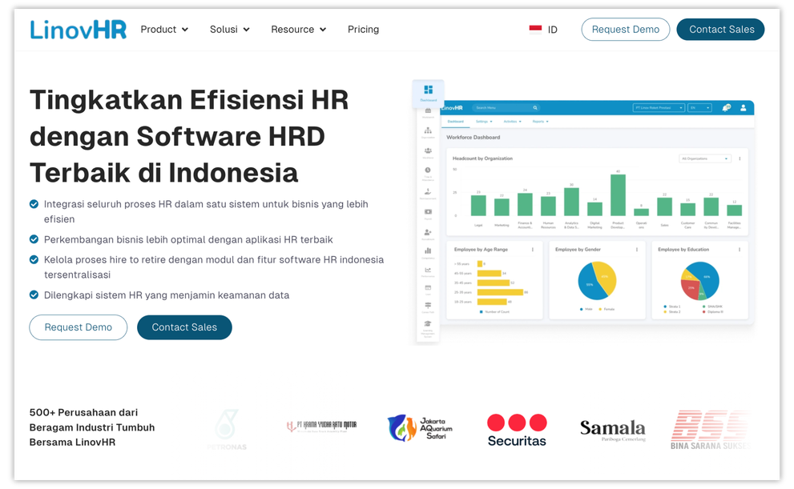
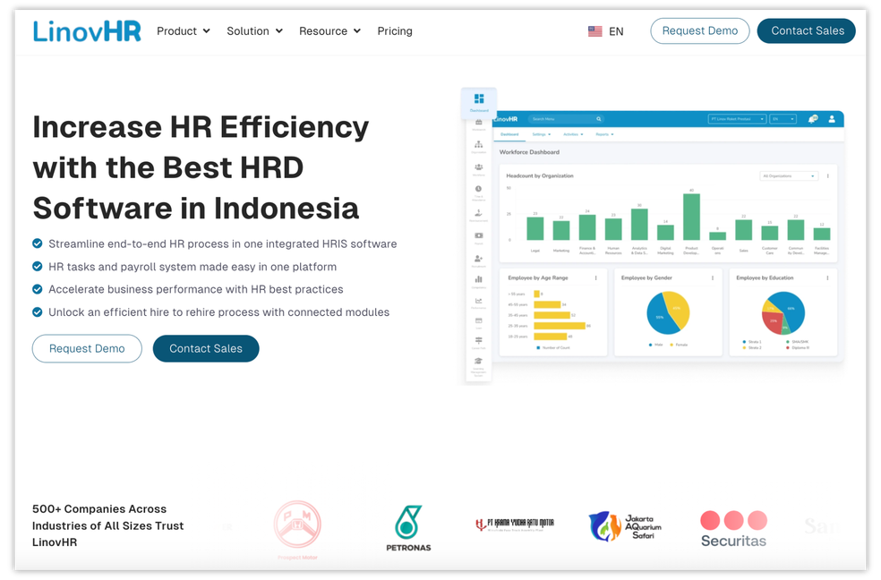
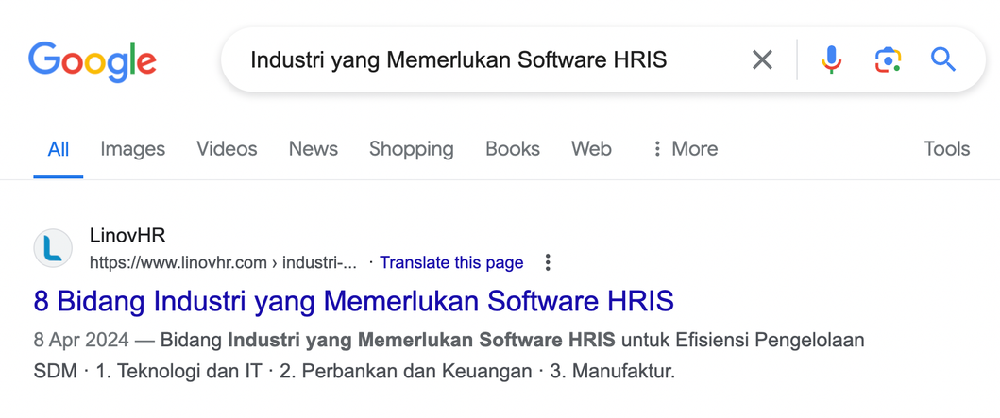
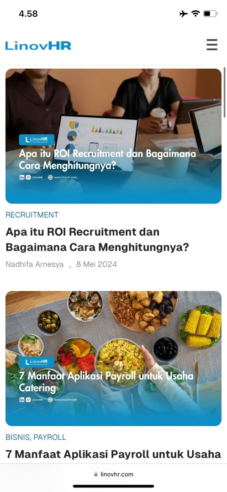
Select an image to take a closer look.
05 / SEO · Website revamp
LinovHR
Combined SERP-led content planning with UX writing for a major website revamp, preserving search visibility while making product messaging clearer and more conversion-focused.
30+ briefs/month
25+ content reviews/month
10+ revamped pages
Case details+
Content system
Planned long-tail keyword clusters, wrote 30+ briefs monthly, reviewed 25+ intern articles, and added product-led CTAs without losing a useful editorial tone.
Website revamp
Wrote user-friendly, conversion-focused copy for 10+ pages while keeping core search terms and existing rankings in view.
Collaboration
Worked with Product, Business Development, SEO, UI/UX, and design teams, including translating the website copy into English.
More project visuals3 +
Select an image to take a closer look.
06 / Social · Personal creator
Personal Content Lab
A hands-on creator practice where ideas move from trend and audience insight to scripting, filming, editing, publishing, and performance experiments.
6.1M post views
51K profile views
400K likes
5,463 shares
Case details+
Role
Develop creative angles from scratch and handle production end to end: ideation, scripting, filming, editing, and publishing.
Approach
Test hooks, formats, and story structures against real audience behavior while keeping sponsored briefs natural to the creator voice.
Engagement snapshot
The portfolio analytics capture 2,176 comments and 5,463 shares alongside 400K likes.
More project visuals1 +
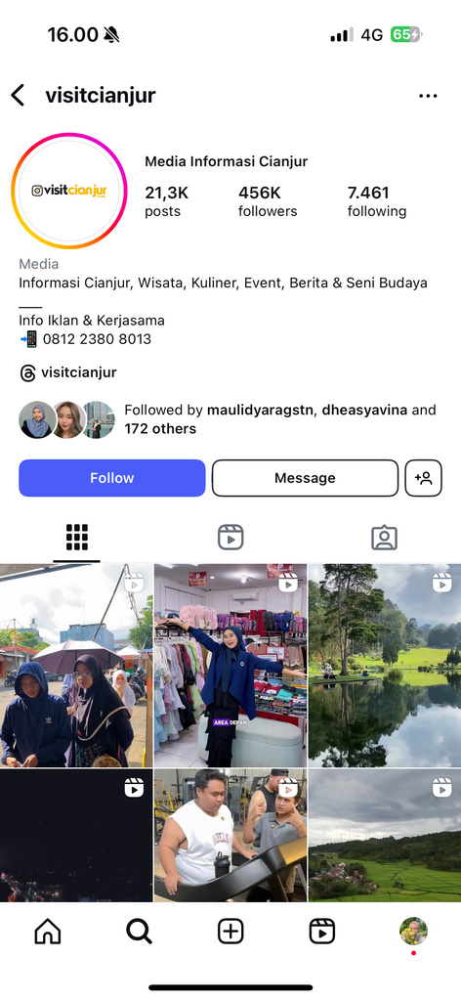
Select an image to take a closer look.
07 / Social · Personal project
Visit Cianjur
Built a local discovery channel end to end — strategy, production, publishing, and brand partnerships — with content shaped around education, entertainment, and local stories.
450K reach
13,969 likes
1,195 shares
3 content pillars
4 brand partnerships
Case details+
Objective
Grow a local-discovery account across followers, reach, impressions, engagement, and paid brand placements.
Approach
Built educational, entertaining, and branded content pillars, then managed everything from ideation and production to publishing and client pitches.
Partnerships
Secured placements with Mustika Ratu Cianjur, BRI Cianjur, CrowdDana, and PT Honda Prospect Motor.
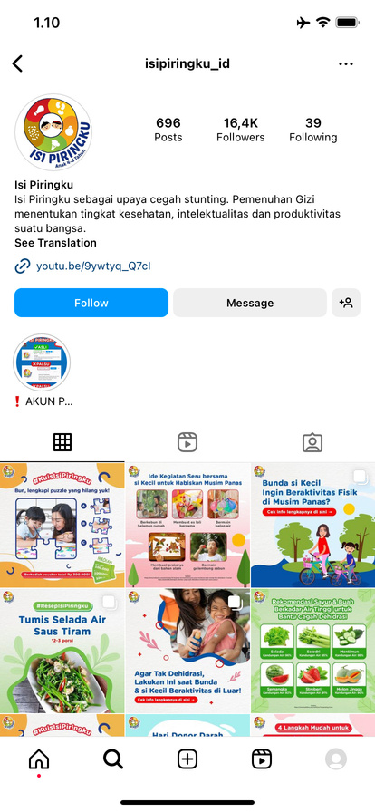
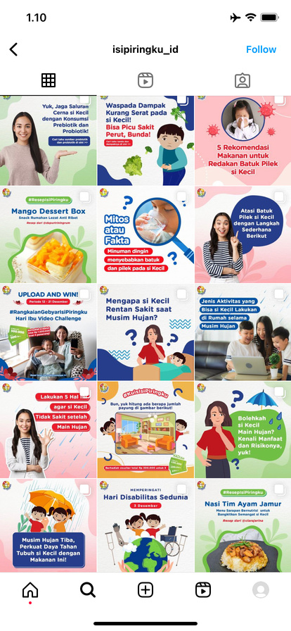
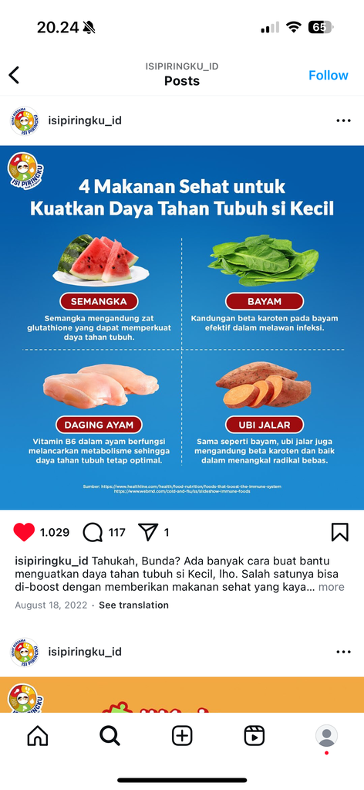
Select an image to take a closer look.
08 / Social · Nutrition education
Isi Piringku
Helped shape Danone Indonesia's nutrition-education content so it stayed scientifically sound, culturally relevant, and easy for parents to act on.
10.4K account followers
2 digital channels
4 Danone brands
Case details+
Background
Danone Indonesia, Aqua, Nutricia, and Sarihusada use the program to support nutrition literacy and help reduce stunting.
Role
Oversaw agency content planning and development, checking nutrition and scientific accuracy before content went live.
Approach
Connected content ideas with current conversations, then refined copy to match the brand voice and resonate with mothers across Instagram and YouTube.
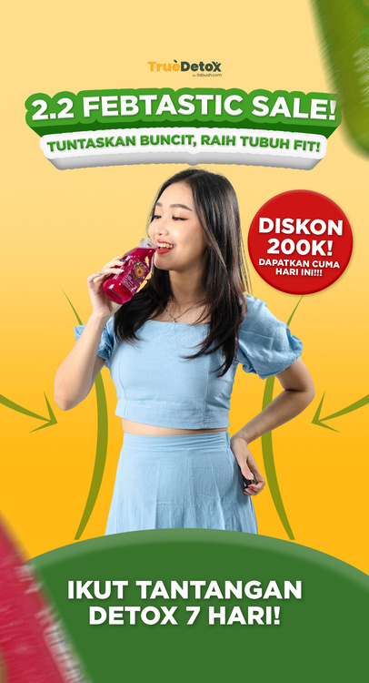
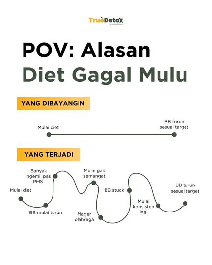
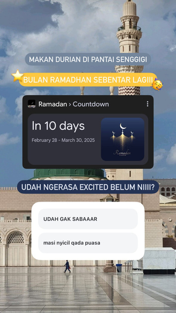
More project visuals4 +
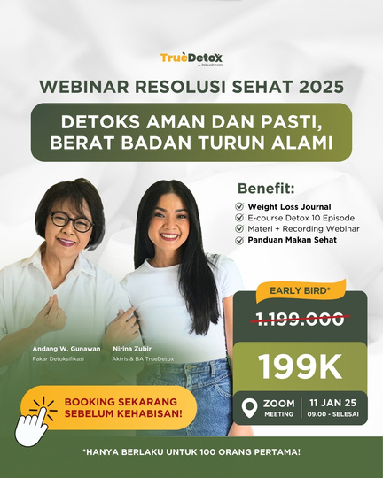
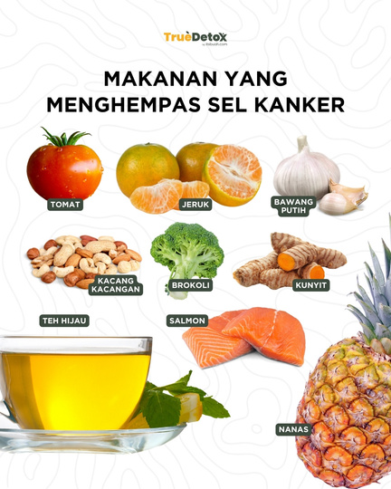
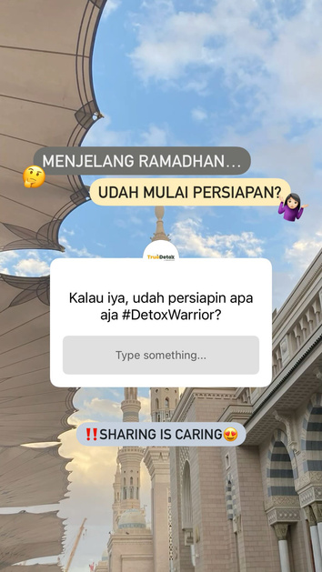
Select an image to take a closer look.
09 / Social · Integrated campaign
IT’s Buah & TrueDetox
Created channel-ready content from ideation to publication, aligning copy and creative with brand, design, and performance teams to drive acquisition.
1,058% revenue growth
34.2% qualified leads
75% ROAS improvement
Case details+
Objective
Support awareness for the new TrueDetox program and turn campaign attention into qualified leads.
Approach
Managed content from idea to publication, partnering with brand strategy, design, and performance marketing across landing pages, feeds, stories, and ads.
Result
Contributed to 1,058% revenue growth, 34.2% growth in qualified leads, and a 75% improvement in ROAS.
Brand collaborations
Content made with brands people already know.
Selected creator and content collaborations from the original portfolio.
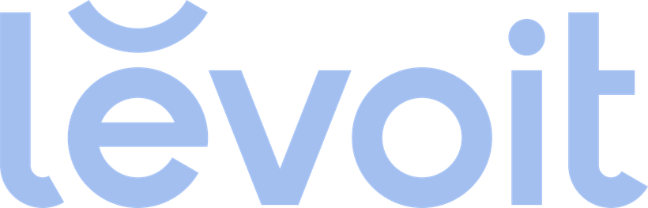
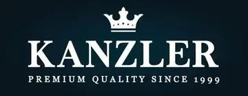
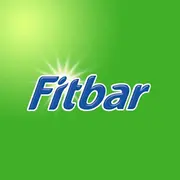
Want the complete case studies, visuals, and process?
03 Experience
Four years of
searching smarter.
Across manufacturing, HR tech, media, logistics, fintech, and consumer brands.
SEO Specialist
Usaha Kreatif Indonesia
Led end-to-end website strategy for RR Express and RR Machinery.
SEO Specialist
PT Knitto Textiles Indonesia
Owned content strategy, optimization, audits, and performance reporting.
SEO Content Strategist
PT Linov Roket Prestasi
Built content systems and contributed UX writing to a major website revamp.
Project & Brand Officer
BERTs
Developed and delivered cross-channel digital content and brand campaigns.
Capabilities
On-page & off-page SEO · Technical audits · Content strategy · SEO writing · Copywriting · Keyword research · Content marketing · Social media management · Analytics & reporting · Design & video editing · On-camera talent
Tools
Ahrefs · Semrush · Google Search Console · Google Analytics · Screaming Frog · WordPress · Google Trends · RankMath · Microsoft Clarity · Canva · CapCut · Asana · Trello · ChatGPT · Qwen
04 Recognition & education
Good work
gets noticed.
2021 — 2024
10× IDN Times writing awards
Best Writer, Best Article, Most Viral Article, Most Active Writer, and Community Writer of the Month.
2022
SEO Group Project Winner
RevoU Full Stack Digital Marketing — grade 96/100.
2022
2nd Place, Google Ads Mini Competition
Selected as project manager for a five-person team.
2022 — 2023
RevoU
Full Stack Digital Marketing · Grade 96/100
2019
Management & Science University
International Medical School · Malaysia
2016 — 2021
Universitas Airlangga
Nutrition Sciences · GPA 3.55/4.00
Have a project in mind?